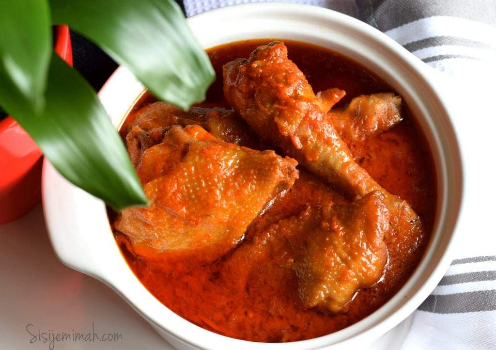

Chicken Stew

picture above is the finished outcome of the meal
Items Needed To Make This Dish
ingredients needed include:
- tomatoes
- maggi chicken
- curry
- salt
- thyme
- onions
- tomatoe paste
- bay leaf
- chicken sauce
Step By Step Process
- In a food processor or blender, combine 4 chopped plum tomatoes, red bell peppers, chopped red onion, habanero peppers, garlic cloves, tomato paste, 1 tablespoon salt, 1 teaspoon pepper, and water. Puree until smooth.
- Heat vegetable oil in a large pot over medium-high heat.
- Add the remaining tomato, sliced onion, remaining salt, and remaining pepper. Sauté until fragrant.
- Add steak, rosemary, paprika, curry powder, and bullion cubes. Cook until the steak is golden brown and cooked through, about 10 minutes.
- Add the blended tomato and pepper mixture and the bay leaf.
- Bring to a boil over high heat. Cover and simmer at low heat for 20 minutes, until the stew has thickened.
- Fish out the bay leaf.
- Remove stew from heat and let sit 10 minutes.
- Serve with white rice and fried plantains. Garnish with scallions and parsley, if desired.
- Enjoy!